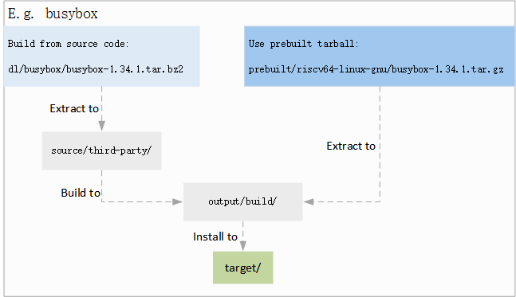

预编译包优势
15 Jan 2024
为了加快 Luban 编译框架中的 SDK 编译速度，编译过程中引入了预编译二进制包机制。
以下为使用源码编译方式和预编译包方式的对比：
| 源码编译方式 | 预编译二进制压缩包 |
|---|---|
| 编译构建时间较长，特别是组件较多时。 SDK 的每一个组件从源码编译时会经历以下流程，比如
Busybox：
|
提取、 处理以及打包install 步骤需要安装的文件，保存生成的压缩包文件。再次编译 SDK
时，可以直接解压使用该二进制压缩文件执行安装，从而跳过组件包的源码编译过程，加快 RootFS 的构建速度。 |

默认配置下，SDK 发布时均会根据项目配置为每一个组件源码包生成对应的预编译二进制包，以节省编译时间，以下源码包除外。下列源码包中，U-Boot 与 Linux
与板子相关性较强，不同的配置生成的二进制文件可能不同，因此每次需从源码进行编译：
-
source/opensbi
-
source/uboot
-
source/linux
-
source/artinchip
用户可根据实际情况配置和选择使用预编译二进制包。如需生成预编译二进制包，可以执行 make <pkg>-prebuilt 命令。具体步骤可查看配置预编译包。